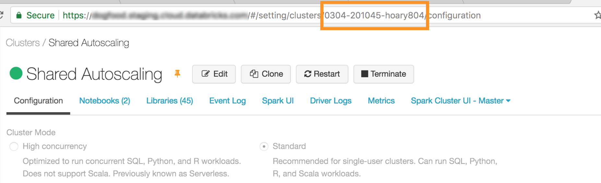
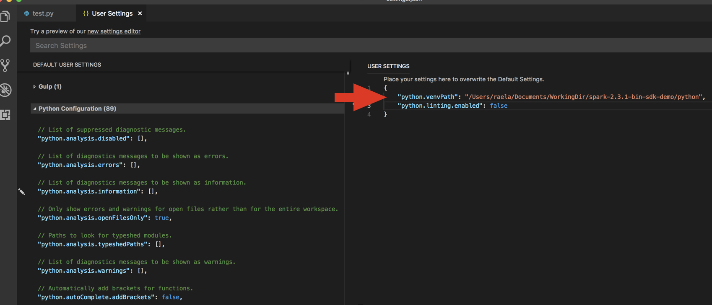
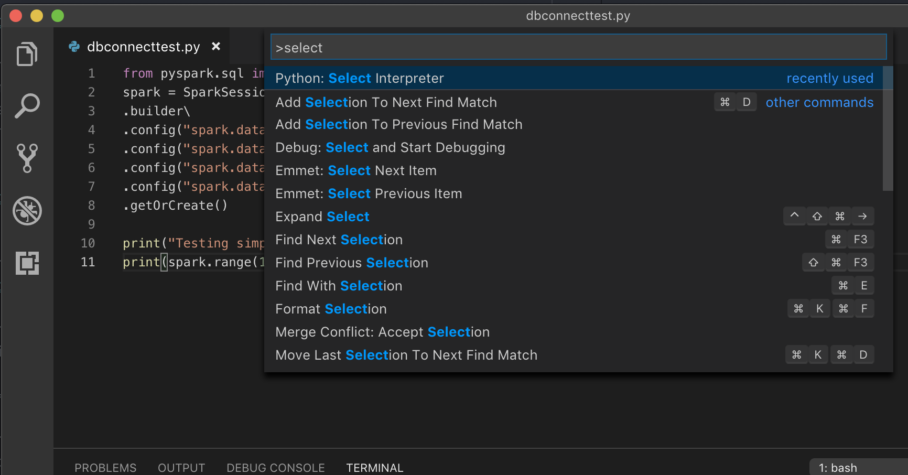
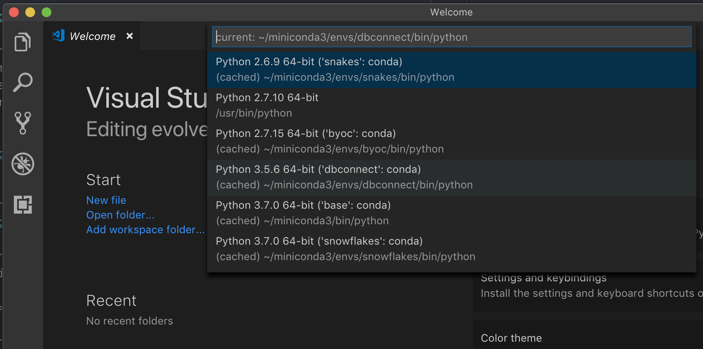
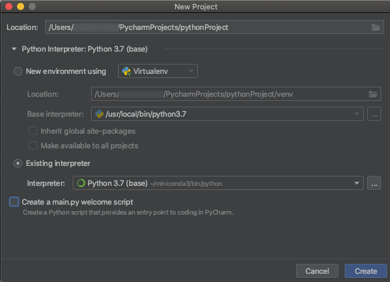
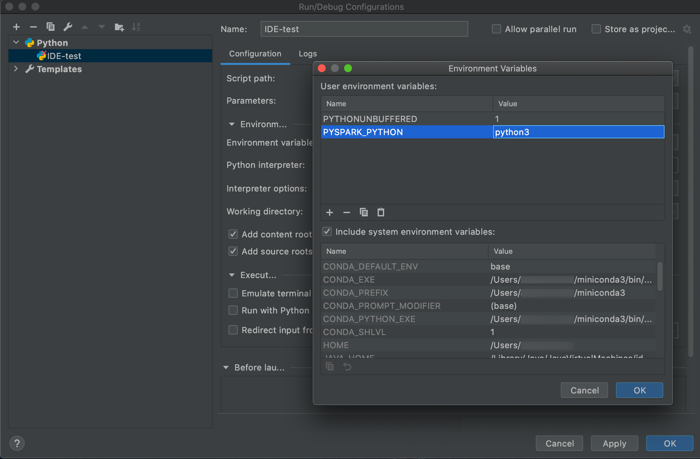
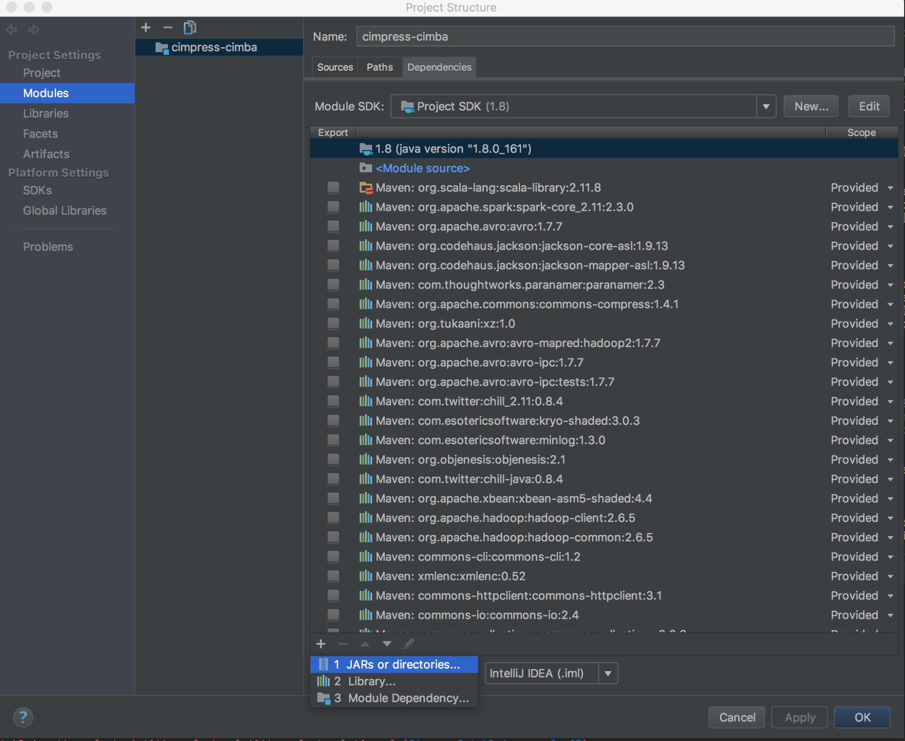
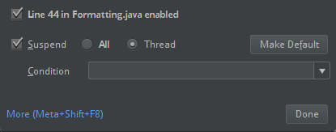
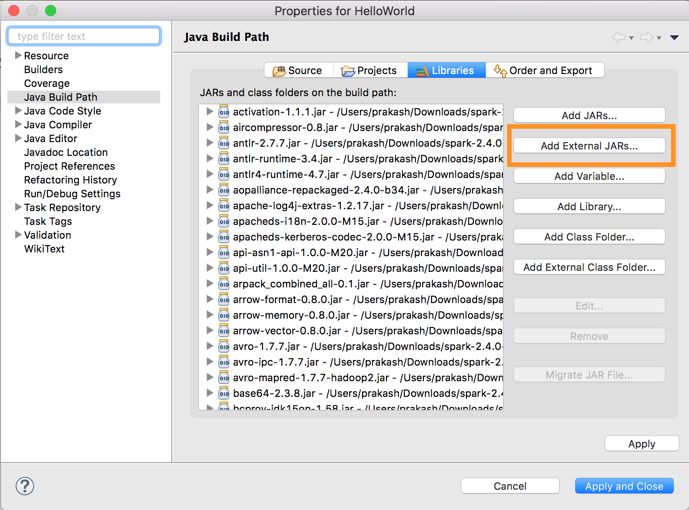
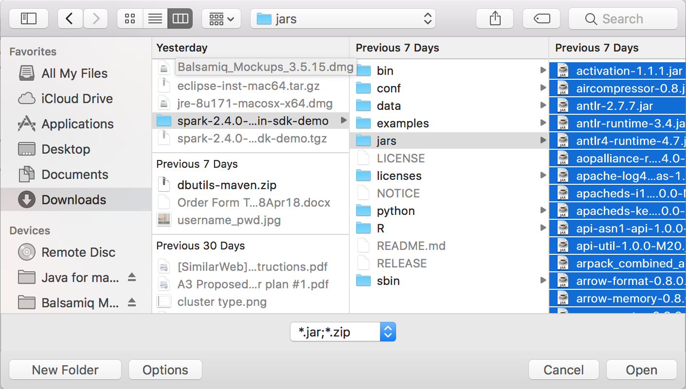

Databricks Connect for Databricks Runtime 12.2 LTS and below
Note
Databricks Connect recommends that you use Databricks Connect for Databricks Runtime 13.0 and above instead.
Databricks plans no new feature work for Databricks Connect for Databricks Runtime 12.2 LTS and below.
Databricks Connect allows you to connect popular IDEs such as Visual Studio Code and PyCharm, notebook servers, and other custom applications to Databricks clusters.
This article explains how Databricks Connect works, walks you through the steps to get started with Databricks Connect, explains how to troubleshoot issues that may arise when using Databricks Connect, and differences between running using Databricks Connect versus running in a Databricks notebook.
Overview
Databricks Connect is a client library for the Databricks Runtime. It allows you to write jobs using Spark APIs and run them remotely on a Databricks cluster instead of in the local Spark session.
For example, when you run the DataFrame command spark.read.format(...).load(...).groupBy(...).agg(...).show() using Databricks Connect, the logical representation of the command is sent to the Spark server running in Databricks for execution on the remote cluster.
With Databricks Connect, you can:
Run large-scale Spark jobs from any Python, R, Scala, or Java application. Anywhere you can
import pyspark,require(SparkR)orimport org.apache.spark, you can now run Spark jobs directly from your application, without needing to install any IDE plugins or use Spark submission scripts.Step through and debug code in your IDE even when working with a remote cluster.
Iterate quickly when developing libraries. You do not need to restart the cluster after changing Python or Java library dependencies in Databricks Connect, because each client session is isolated from each other in the cluster.
Shut down idle clusters without losing work. Because the client application is decoupled from the cluster, it is unaffected by cluster restarts or upgrades, which would normally cause you to lose all the variables, RDDs, and DataFrame objects defined in a notebook.
Note
For Python development with SQL queries, Databricks recommends that you use the Databricks SQL Connector for Python instead of Databricks Connect. the Databricks SQL Connector for Python is easier to set up than Databricks Connect. Also, Databricks Connect parses and plans jobs runs on your local machine, while jobs run on remote compute resources. This can make it especially difficult to debug runtime errors. The Databricks SQL Connector for Python submits SQL queries directly to remote compute resources and fetches results.
Requirements
This section lists the requirements for Databricks Connect.
Only the following Databricks Runtime versions are supported:
Databricks Runtime 12.2 LTS ML, Databricks Runtime 12.2 LTS
Databricks Runtime 11.3 LTS ML, Databricks Runtime 11.3 LTS
Databricks Runtime 10.4 LTS ML, Databricks Runtime 10.4 LTS
Databricks Runtime 9.1 LTS ML, Databricks Runtime 9.1 LTS
Databricks Runtime 7.3 LTS
You must install Python 3 on your development machine, and the minor version of your client Python installation must be the same as the minor Python version of your Databricks cluster. The following table shows the Python version installed with each Databricks Runtime.
Databricks Runtime version
Python version
12.2 LTS ML, 12.2 LTS
3.9
11.3 LTS ML, 11.3 LTS
3.9
10.4 LTS ML, 10.4 LTS
3.8
9.1 LTS ML, 9.1 LTS
3.8
7.3 LTS
3.7
Databricks strongly recommends that you have a Python virtual environment activated for each Python version that you use with Databricks Connect. Python virtual environments help to make sure that you are using the correct versions of Python and Databricks Connect together. This can help to reduce the time spent resolving related technical issues.
For example, if you’re using venv on your development machine and your cluster is running Python 3.9, you must create a
venvenvironment with that version. The following example command generates the scripts to activate avenvenvironment with Python 3.9, and this command then places those scripts within a hidden folder named.venvwithin the current working directory:# Linux and macOS python3.9 -m venv ./.venv # Windows python3.9 -m venv .\.venv
To use these scripts to activate this
venvenvironment, see How venvs work.As another example, if you’re using Conda on your development machine and your cluster is running Python 3.9, you must create a Conda environment with that version, for example:
conda create --name dbconnect python=3.9
To activate the Conda environment with this environment name, run
conda activate dbconnect.The Databricks Connect major and minor package version must always match your Databricks Runtime version. Databricks recommends that you always use the most recent package of Databricks Connect that matches your Databricks Runtime version. For example, when you use a Databricks Runtime 12.2 LTS cluster, you must also use the
databricks-connect==12.2.*package.Note
See the Databricks Connect release notes for a list of available Databricks Connect releases and maintenance updates.
Java Runtime Environment (JRE) 8. The client has been tested with the OpenJDK 8 JRE. The client does not support Java 11.
Note
On Windows, if you see an error that Databricks Connect cannot find winutils.exe, see Cannot find winutils.exe on Windows.
Set up the client
Complete the following steps to set up the local client for Databricks Connect.
Note
Before you begin to set up the local Databricks Connect client, you must meet the requirements for Databricks Connect.
Step 1: Install the Databricks Connect client
With your virtual environment activated, uninstall PySpark, if it is already installed, by running the
uninstallcommand. This is required because thedatabricks-connectpackage conflicts with PySpark. For details, see Conflicting PySpark installations. To check whether PySpark is already installed, run theshowcommand.# Is PySpark already installed? pip3 show pyspark # Uninstall PySpark pip3 uninstall pyspark
With your virtual environment still activated, install the Databricks Connect client by running the
installcommand. Use the--upgradeoption to upgrade any existing client installation to the specified version.pip3 install --upgrade "databricks-connect==12.2.*" # Or X.Y.* to match your cluster version.
Note
Databricks recommends that you append the “dot-asterisk” notation to specify
databricks-connect==X.Y.*instead ofdatabricks-connect=X.Y, to make sure that the most recent package is installed.
Step 2: Configure connection properties
Collect the following configuration properties.
The Databricks workspace URL.
Your Databricks personal access token.
The ID of your cluster. You can obtain the cluster ID from the URL. Here the cluster ID is
0304-201045-hoary804.The port that Databricks Connect connects to on your cluster. The default port is
15001.
Configure the connection as follows.
You can use the CLI, SQL configs, or environment variables. The precedence of configuration methods from highest to lowest is: SQL config keys, CLI, and environment variables.
CLI
Run
databricks-connect.databricks-connect configureThe license displays:
Copyright (2018) Databricks, Inc. This library (the "Software") may not be used except in connection with the Licensee's use of the Databricks Platform Services pursuant to an Agreement ...
Accept the license and supply configuration values. For Databricks Host and Databricks Token, enter the workspace URL and the personal access token you noted in Step 1.
Do you accept the above agreement? [y/N] y Set new config values (leave input empty to accept default): Databricks Host [no current value, must start with https://]: <databricks-url> Databricks Token [no current value]: <databricks-token> Cluster ID (e.g., 0921-001415-jelly628) [no current value]: <cluster-id> Org ID (Azure-only, see ?o=orgId in URL) [0]: <org-id> Port [15001]: <port>
SQL configs or environment variables. The following table shows the SQL config keys and the environment variables that correspond to the configuration properties you noted in Step 1. To set a SQL config key, use
sql("set config=value"). For example:sql("set spark.databricks.service.clusterId=0304-201045-abcdefgh").Parameter
SQL config key
Environment variable name
Databricks Host
spark.databricks.service.address
DATABRICKS_ADDRESS
Databricks Token
spark.databricks.service.token
DATABRICKS_API_TOKEN
Cluster ID
spark.databricks.service.clusterId
DATABRICKS_CLUSTER_ID
Org ID
spark.databricks.service.orgId
DATABRICKS_ORG_ID
Port
spark.databricks.service.port
DATABRICKS_PORT
With your virtual environment still activated, test connectivity to Databricks as follows.
databricks-connect test
If the cluster you configured is not running, the test starts the cluster which will remain running until its configured autotermination time. The output should look similar to the following:
* PySpark is installed at /.../.../pyspark * Checking java version java version "1.8..." Java(TM) SE Runtime Environment (build 1.8...) Java HotSpot(TM) 64-Bit Server VM (build 25..., mixed mode) * Testing scala command ../../.. ..:..:.. WARN NativeCodeLoader: Unable to load native-hadoop library for your platform... using builtin-java classes where applicable Using Spark's default log4j profile: org/apache/spark/log4j-defaults.properties Setting default log level to "WARN". To adjust logging level use sc.setLogLevel(newLevel). For SparkR, use setLogLevel(newLevel). ../../.. ..:..:.. WARN MetricsSystem: Using default name SparkStatusTracker for source because neither spark.metrics.namespace nor spark.app.id is set. ../../.. ..:..:.. WARN SparkServiceRPCClient: Now tracking server state for 5ab..., invalidating prev state ../../.. ..:..:.. WARN SparkServiceRPCClient: Syncing 129 files (176036 bytes) took 3003 ms Welcome to ____ __ / __/__ ___ _____/ /__ _\ \/ _ \/ _ `/ __/ '_/ /___/ .__/\_,_/_/ /_/\_\ version 2... /_/ Using Scala version 2.... (Java HotSpot(TM) 64-Bit Server VM, Java 1.8...) Type in expressions to have them evaluated. Type :help for more information. scala> spark.range(100).reduce(_ + _) Spark context Web UI available at https://... Spark context available as 'sc' (master = local[*], app id = local-...). Spark session available as 'spark'. View job details at <databricks-url>/?o=0#/setting/clusters/<cluster-id>/sparkUi View job details at <databricks-url>?o=0#/setting/clusters/<cluster-id>/sparkUi res0: Long = 4950 scala> :quit * Testing python command ../../.. ..:..:.. WARN NativeCodeLoader: Unable to load native-hadoop library for your platform... using builtin-java classes where applicable Using Spark's default log4j profile: org/apache/spark/log4j-defaults.properties Setting default log level to "WARN". To adjust logging level use sc.setLogLevel(newLevel). For SparkR, use setLogLevel(newLevel). ../../.. ..:..:.. WARN MetricsSystem: Using default name SparkStatusTracker for source because neither spark.metrics.namespace nor spark.app.id is set. ../../.. ..:..:.. WARN SparkServiceRPCClient: Now tracking server state for 5ab.., invalidating prev state View job details at <databricks-url>/?o=0#/setting/clusters/<cluster-id>/sparkUiIf no connection-related errors are shown (
WARNmessages are okay), then you have successfully connected.
Use Databricks Connect
The section describes how to configure your preferred IDE or notebook server to use the client for Databricks Connect.
In this section:
JupyterLab
Note
Before you begin to use Databricks Connect, you must meet the requirements and set up the client for Databricks Connect.
To use Databricks Connect with JupyterLab and Python, follow these instructions.
To install JupyterLab, with your Python virtual environment activated, run the following command from your terminal or Command Prompt:
pip3 install jupyterlab
To start JupyterLab in your web browser, run the following command from your activated Python virtual environment:
jupyter labIf JupyterLab does not appear in your web browser, copy the URL that starts with
localhostor127.0.0.1from your virtual environment, and enter it in your web browser’s address bar.Create a new notebook: in JupyterLab, click File > New > Notebook on the main menu, select Python 3 (ipykernel) and click Select.
In the notebook’s first cell, enter either the example code or your own code. If you use your own code, at minimum you must instantiate an instance of
SparkSession.builder.getOrCreate(), as shown in the example code.To run the notebook, click Run > Run All Cells.
To debug the notebook, click the bug (Enable Debugger) icon next to Python 3 (ipykernel) in the notebook’s toolbar. Set one or more breakpoints, and then click Run > Run All Cells.
To shut down JupyterLab, click File > Shut Down. If the JupyterLab process is still running in your terminal or Command Prompt, stop this process by pressing
Ctrl + cand then enteringyto confirm.
For more specific debug instructions, see Debugger.
Classic Jupyter Notebook
Note
Before you begin to use Databricks Connect, you must meet the requirements and set up the client for Databricks Connect.
The configuration script for Databricks Connect automatically adds the package to your project configuration. To get started in a Python kernel, run:
from pyspark.sql import SparkSession
spark = SparkSession.builder.getOrCreate()
To enable the %sql shorthand for running and visualizing SQL queries, use the following snippet:
from IPython.core.magic import line_magic, line_cell_magic, Magics, magics_class
@magics_class
class DatabricksConnectMagics(Magics):
@line_cell_magic
def sql(self, line, cell=None):
if cell and line:
raise ValueError("Line must be empty for cell magic", line)
try:
from autovizwidget.widget.utils import display_dataframe
except ImportError:
print("Please run `pip install autovizwidget` to enable the visualization widget.")
display_dataframe = lambda x: x
return display_dataframe(self.get_spark().sql(cell or line).toPandas())
def get_spark(self):
user_ns = get_ipython().user_ns
if "spark" in user_ns:
return user_ns["spark"]
else:
from pyspark.sql import SparkSession
user_ns["spark"] = SparkSession.builder.getOrCreate()
return user_ns["spark"]
ip = get_ipython()
ip.register_magics(DatabricksConnectMagics)
Visual Studio Code
Note
Before you begin to use Databricks Connect, you must meet the requirements and set up the client for Databricks Connect.
To use Databricks Connect with Visual Studio Code, do the following:
Verify that the Python extension is installed.
Open the Command Palette (Command+Shift+P on macOS and Ctrl+Shift+P on Windows/Linux).
Select a Python interpreter. Go to Code > Preferences > Settings, and choose python settings.
Run
databricks-connect get-jar-dir.Add the directory returned from the command to the User Settings JSON under
python.venvPath. This should be added to the Python Configuration.Disable the linter. Click the … on the right side and edit json settings. The modified settings are as follows:
If running with a virtual environment, which is the recommended way to develop for Python in VS Code, in the Command Palette type
select python interpreterand point to your environment that matches your cluster Python version.For example, if your cluster is Python 3.9, your development environment should be Python 3.9.

PyCharm
Note
Before you begin to use Databricks Connect, you must meet the requirements and set up the client for Databricks Connect.
The configuration script for Databricks Connect automatically adds the package to your project configuration.
Python 3 clusters
When you create a PyCharm project, select Existing Interpreter. From the drop-down menu, select the Conda environment you created (see Requirements).
Go to Run > Edit Configurations.
Add
PYSPARK_PYTHON=python3as an environment variable.
SparkR and RStudio Desktop
Note
Before you begin to use Databricks Connect, you must meet the requirements and set up the client for Databricks Connect.
To use Databricks Connect with SparkR and RStudio Desktop, do the following:
Download and unpack the open source Spark distribution onto your development machine. Choose the same version as in your Databricks cluster (Hadoop 2.7).
Run
databricks-connect get-jar-dir. This command returns a path like/usr/local/lib/python3.5/dist-packages/pyspark/jars. Copy the file path of one directory above the JAR directory file path, for example,/usr/local/lib/python3.5/dist-packages/pyspark, which is theSPARK_HOMEdirectory.Configure the Spark lib path and Spark home by adding them to the top of your R script. Set
<spark-lib-path>to the directory where you unpacked the open source Spark package in step 1. Set<spark-home-path>to the Databricks Connect directory from step 2.# Point to the OSS package path, e.g., /path/to/.../spark-2.4.0-bin-hadoop2.7 library(SparkR, lib.loc = .libPaths(c(file.path('<spark-lib-path>', 'R', 'lib'), .libPaths()))) # Point to the Databricks Connect PySpark installation, e.g., /path/to/.../pyspark Sys.setenv(SPARK_HOME = "<spark-home-path>")
Initiate a Spark session and start running SparkR commands.
sparkR.session() df <- as.DataFrame(faithful) head(df) df1 <- dapply(df, function(x) { x }, schema(df)) collect(df1)
sparklyr and RStudio Desktop
Note
Before you begin to use Databricks Connect, you must meet the requirements and set up the client for Databricks Connect.
Preview
This feature is in Public Preview.
You can copy sparklyr-dependent code that you’ve developed locally using Databricks Connect and run it in a Databricks notebook or hosted RStudio Server in your Databricks workspace with minimal or no code changes.
In this section:
Requirements
sparklyr 1.2 or above.
Databricks Runtime 7.3 LTS or above with the matching version of Databricks Connect.
Install, configure, and use sparklyr
In RStudio Desktop, install sparklyr 1.2 or above from CRAN or install the latest master version from GitHub.
# Install from CRAN install.packages("sparklyr") # Or install the latest master version from GitHub install.packages("devtools") devtools::install_github("sparklyr/sparklyr")
Activate the Python environment with the correct version of Databricks Connect installed and run the following command in the terminal to get the
<spark-home-path>:databricks-connect get-spark-homeInitiate a Spark session and start running sparklyr commands.
library(sparklyr) sc <- spark_connect(method = "databricks", spark_home = "<spark-home-path>") iris_tbl <- copy_to(sc, iris, overwrite = TRUE) library(dplyr) src_tbls(sc) iris_tbl %>% count
Close the connection.
spark_disconnect(sc)
sparklyr and RStudio Desktop limitations
The following features are unsupported:
sparklyr streaming APIs
sparklyr ML APIs
broom APIs
csv_file serialization mode
spark submit
IntelliJ (Scala or Java)
Note
Before you begin to use Databricks Connect, you must meet the requirements and set up the client for Databricks Connect.
To use Databricks Connect with IntelliJ (Scala or Java), do the following:
Run
databricks-connect get-jar-dir.Point the dependencies to the directory returned from the command. Go to File > Project Structure > Modules > Dependencies > ‘+’ sign > JARs or Directories.
To avoid conflicts, we strongly recommend removing any other Spark installations from your classpath. If this is not possible, make sure that the JARs you add are at the front of the classpath. In particular, they must be ahead of any other installed version of Spark (otherwise you will either use one of those other Spark versions and run locally or throw a
ClassDefNotFoundError).Check the setting of the breakout option in IntelliJ. The default is All and will cause network timeouts if you set breakpoints for debugging. Set it to Thread to avoid stopping the background network threads.

PyDev with Eclipse
Note
Before you begin to use Databricks Connect, you must meet the requirements and set up the client for Databricks Connect.
To use Databricks Connect and PyDev with Eclipse, follow these instructions.
Start Eclipse.
Create a project: click File > New > Project > PyDev > PyDev Project, and then click Next.
Specify a Project name.
For Project contents, specify the path to your Python virtual environment.
Click Please configure an interpreter before proceeding.
Click Manual config.
Click New > Browse for python/pypy exe.
Browse to and select select the full path to the Python interpreter that is referenced from the virtual environment, and then click Open.
In the Select interpreter dialog, click OK.
In the Selection needed dialog, click OK.
In the Preferences dialog, click Apply and Close.
In the PyDev Project dialog, click Finish.
Click Open Perspective.
Add to the project a Python code (
.py) file that contains either the example code or your own code. If you use your own code, at minimum you must instantiate an instance ofSparkSession.builder.getOrCreate(), as shown in the example code.With the Python code file open, set any breakpoints where you want your code to pause while running.
Click Run > Run or Run > Debug.
For more specific run and debug instructions, see Running a Program.
Eclipse
Note
Before you begin to use Databricks Connect, you must meet the requirements and set up the client for Databricks Connect.
To use Databricks Connect and Eclipse, do the following:
Run
databricks-connect get-jar-dir.Point the external JARs configuration to the directory returned from the command. Go to Project menu > Properties > Java Build Path > Libraries > Add External Jars.
To avoid conflicts, we strongly recommend removing any other Spark installations from your classpath. If this is not possible, make sure that the JARs you add are at the front of the classpath. In particular, they must be ahead of any other installed version of Spark (otherwise you will either use one of those other Spark versions and run locally or throw a
ClassDefNotFoundError).
SBT
Note
Before you begin to use Databricks Connect, you must meet the requirements and set up the client for Databricks Connect.
To use Databricks Connect with SBT, you must configure your build.sbt file to link against the Databricks Connect JARs instead of the usual Spark library dependency. You do this with the unmanagedBase directive in the following example build file, which assumes a Scala app that has a com.example.Test main object:
Spark shell
Note
Before you begin to use Databricks Connect, you must meet the requirements and set up the client for Databricks Connect.
To use Databricks Connect with the Spark shell and Python or Scala, follow these instructions.
With your virtual environment activated, make sure that the
databricks-connect testcommand ran successfully in Set up the client.With your virtual environment activated, start the Spark shell. For Python, run the
pysparkcommand. For Scala, run thespark-shellcommand.# For Python: pyspark# For Scala: spark-shellThe Spark shell appears, for example for Python:
Python 3... (v3...) [Clang 6... (clang-6...)] on darwin Type "help", "copyright", "credits" or "license" for more information. Setting default log level to "WARN". To adjust logging level use sc.setLogLevel(newLevel). For SparkR, use setLogLevel(newLevel). ../../.. ..:..:.. WARN NativeCodeLoader: Unable to load native-hadoop library for your platform... using builtin-java classes where applicable Welcome to ____ __ / __/__ ___ _____/ /__ _\ \/ _ \/ _ `/ __/ '_/ /__ / .__/\_,_/_/ /_/\_\ version 3.... /_/ Using Python version 3... (v3...) Spark context Web UI available at http://...:... Spark context available as 'sc' (master = local[*], app id = local-...). SparkSession available as 'spark'. >>>For Scala:
Setting default log level to "WARN". To adjust logging level use sc.setLogLevel(newLevel). For SparkR, use setLogLevel(newLevel). ../../.. ..:..:.. WARN NativeCodeLoader: Unable to load native-hadoop library for your platform... using builtin-java classes where applicable Spark context Web UI available at http://... Spark context available as 'sc' (master = local[*], app id = local-...). Spark session available as 'spark'. Welcome to ____ __ / __/__ ___ _____/ /__ _\ \/ _ \/ _ `/ __/ '_/ /___/ .__/\_,_/_/ /_/\_\ version 3... /_/ Using Scala version 2... (OpenJDK 64-Bit Server VM, Java 1.8...) Type in expressions to have them evaluated. Type :help for more information. scala>Refer to Interactive Analysis with the Spark Shell for information about how to use the Spark shell with Python or Scala to run commands on your cluster.
Use the built-in
sparkvariable to represent theSparkSessionon your running cluster, for example for Python:>>> df = spark.read.table("samples.nyctaxi.trips") >>> df.show(5) +--------------------+---------------------+-------------+-----------+----------+-----------+ |tpep_pickup_datetime|tpep_dropoff_datetime|trip_distance|fare_amount|pickup_zip|dropoff_zip| +--------------------+---------------------+-------------+-----------+----------+-----------+ | 2016-02-14 16:52:13| 2016-02-14 17:16:04| 4.94| 19.0| 10282| 10171| | 2016-02-04 18:44:19| 2016-02-04 18:46:00| 0.28| 3.5| 10110| 10110| | 2016-02-17 17:13:57| 2016-02-17 17:17:55| 0.7| 5.0| 10103| 10023| | 2016-02-18 10:36:07| 2016-02-18 10:41:45| 0.8| 6.0| 10022| 10017| | 2016-02-22 14:14:41| 2016-02-22 14:31:52| 4.51| 17.0| 10110| 10282| +--------------------+---------------------+-------------+-----------+----------+-----------+ only showing top 5 rowsFor Scala:
>>> val df = spark.read.table("samples.nyctaxi.trips") >>> df.show(5) +--------------------+---------------------+-------------+-----------+----------+-----------+ |tpep_pickup_datetime|tpep_dropoff_datetime|trip_distance|fare_amount|pickup_zip|dropoff_zip| +--------------------+---------------------+-------------+-----------+----------+-----------+ | 2016-02-14 16:52:13| 2016-02-14 17:16:04| 4.94| 19.0| 10282| 10171| | 2016-02-04 18:44:19| 2016-02-04 18:46:00| 0.28| 3.5| 10110| 10110| | 2016-02-17 17:13:57| 2016-02-17 17:17:55| 0.7| 5.0| 10103| 10023| | 2016-02-18 10:36:07| 2016-02-18 10:41:45| 0.8| 6.0| 10022| 10017| | 2016-02-22 14:14:41| 2016-02-22 14:31:52| 4.51| 17.0| 10110| 10282| +--------------------+---------------------+-------------+-----------+----------+-----------+ only showing top 5 rowsTo stop the Spark shell, press
Ctrl + dorCtrl + z, or run the commandquit()orexit()for Python or:qor:quitfor Scala.
Code examples
This simple code example queries the specified table and then shows the specified table’s first 5 rows. To use a different table, adjust the call to spark.read.table.
from pyspark.sql.session import SparkSession
spark = SparkSession.builder.getOrCreate()
df = spark.read.table("samples.nyctaxi.trips")
df.show(5)
This longer code example does the following:
Creates an in-memory DataFrame.
Creates a table with the name
zzz_demo_temps_tablewithin thedefaultschema. If the table with this name already exists, the table is deleted first. To use a different schema or table, adjust the calls tospark.sql,temps.write.saveAsTable, or both.Saves the DataFrame’s contents to the table.
Runs a
SELECTquery on the table’s contents.Shows the query’s result.
Deletes the table.
from pyspark.sql import SparkSession
from pyspark.sql.types import *
from datetime import date
spark = SparkSession.builder.appName('temps-demo').getOrCreate()
# Create a Spark DataFrame consisting of high and low temperatures
# by airport code and date.
schema = StructType([
StructField('AirportCode', StringType(), False),
StructField('Date', DateType(), False),
StructField('TempHighF', IntegerType(), False),
StructField('TempLowF', IntegerType(), False)
])
data = [
[ 'BLI', date(2021, 4, 3), 52, 43],
[ 'BLI', date(2021, 4, 2), 50, 38],
[ 'BLI', date(2021, 4, 1), 52, 41],
[ 'PDX', date(2021, 4, 3), 64, 45],
[ 'PDX', date(2021, 4, 2), 61, 41],
[ 'PDX', date(2021, 4, 1), 66, 39],
[ 'SEA', date(2021, 4, 3), 57, 43],
[ 'SEA', date(2021, 4, 2), 54, 39],
[ 'SEA', date(2021, 4, 1), 56, 41]
]
temps = spark.createDataFrame(data, schema)
# Create a table on the Databricks cluster and then fill
# the table with the DataFrame's contents.
# If the table already exists from a previous run,
# delete it first.
spark.sql('USE default')
spark.sql('DROP TABLE IF EXISTS zzz_demo_temps_table')
temps.write.saveAsTable('zzz_demo_temps_table')
# Query the table on the Databricks cluster, returning rows
# where the airport code is not BLI and the date is later
# than 2021-04-01. Group the results and order by high
# temperature in descending order.
df_temps = spark.sql("SELECT * FROM zzz_demo_temps_table " \
"WHERE AirportCode != 'BLI' AND Date > '2021-04-01' " \
"GROUP BY AirportCode, Date, TempHighF, TempLowF " \
"ORDER BY TempHighF DESC")
df_temps.show()
# Results:
#
# +-----------+----------+---------+--------+
# |AirportCode| Date|TempHighF|TempLowF|
# +-----------+----------+---------+--------+
# | PDX|2021-04-03| 64| 45|
# | PDX|2021-04-02| 61| 41|
# | SEA|2021-04-03| 57| 43|
# | SEA|2021-04-02| 54| 39|
# +-----------+----------+---------+--------+
# Clean up by deleting the table from the Databricks cluster.
spark.sql('DROP TABLE zzz_demo_temps_table')
import org.apache.spark.sql.SparkSession
import org.apache.spark.sql.types._
import org.apache.spark.sql.Row
import java.sql.Date
object Demo {
def main(args: Array[String]) {
val spark = SparkSession.builder.master("local").getOrCreate()
// Create a Spark DataFrame consisting of high and low temperatures
// by airport code and date.
val schema = StructType(Array(
StructField("AirportCode", StringType, false),
StructField("Date", DateType, false),
StructField("TempHighF", IntegerType, false),
StructField("TempLowF", IntegerType, false)
))
val data = List(
Row("BLI", Date.valueOf("2021-04-03"), 52, 43),
Row("BLI", Date.valueOf("2021-04-02"), 50, 38),
Row("BLI", Date.valueOf("2021-04-01"), 52, 41),
Row("PDX", Date.valueOf("2021-04-03"), 64, 45),
Row("PDX", Date.valueOf("2021-04-02"), 61, 41),
Row("PDX", Date.valueOf("2021-04-01"), 66, 39),
Row("SEA", Date.valueOf("2021-04-03"), 57, 43),
Row("SEA", Date.valueOf("2021-04-02"), 54, 39),
Row("SEA", Date.valueOf("2021-04-01"), 56, 41)
)
val rdd = spark.sparkContext.makeRDD(data)
val temps = spark.createDataFrame(rdd, schema)
// Create a table on the Databricks cluster and then fill
// the table with the DataFrame's contents.
// If the table already exists from a previous run,
// delete it first.
spark.sql("USE default")
spark.sql("DROP TABLE IF EXISTS zzz_demo_temps_table")
temps.write.saveAsTable("zzz_demo_temps_table")
// Query the table on the Databricks cluster, returning rows
// where the airport code is not BLI and the date is later
// than 2021-04-01. Group the results and order by high
// temperature in descending order.
val df_temps = spark.sql("SELECT * FROM zzz_demo_temps_table " +
"WHERE AirportCode != 'BLI' AND Date > '2021-04-01' " +
"GROUP BY AirportCode, Date, TempHighF, TempLowF " +
"ORDER BY TempHighF DESC")
df_temps.show()
// Results:
//
// +-----------+----------+---------+--------+
// |AirportCode| Date|TempHighF|TempLowF|
// +-----------+----------+---------+--------+
// | PDX|2021-04-03| 64| 45|
// | PDX|2021-04-02| 61| 41|
// | SEA|2021-04-03| 57| 43|
// | SEA|2021-04-02| 54| 39|
// +-----------+----------+---------+--------+
// Clean up by deleting the table from the Databricks cluster.
spark.sql("DROP TABLE zzz_demo_temps_table")
}
}
import java.util.ArrayList;
import java.util.List;
import java.sql.Date;
import org.apache.spark.sql.SparkSession;
import org.apache.spark.sql.types.*;
import org.apache.spark.sql.Row;
import org.apache.spark.sql.RowFactory;
import org.apache.spark.sql.Dataset;
public class App {
public static void main(String[] args) throws Exception {
SparkSession spark = SparkSession
.builder()
.appName("Temps Demo")
.config("spark.master", "local")
.getOrCreate();
// Create a Spark DataFrame consisting of high and low temperatures
// by airport code and date.
StructType schema = new StructType(new StructField[] {
new StructField("AirportCode", DataTypes.StringType, false, Metadata.empty()),
new StructField("Date", DataTypes.DateType, false, Metadata.empty()),
new StructField("TempHighF", DataTypes.IntegerType, false, Metadata.empty()),
new StructField("TempLowF", DataTypes.IntegerType, false, Metadata.empty()),
});
List<Row> dataList = new ArrayList<Row>();
dataList.add(RowFactory.create("BLI", Date.valueOf("2021-04-03"), 52, 43));
dataList.add(RowFactory.create("BLI", Date.valueOf("2021-04-02"), 50, 38));
dataList.add(RowFactory.create("BLI", Date.valueOf("2021-04-01"), 52, 41));
dataList.add(RowFactory.create("PDX", Date.valueOf("2021-04-03"), 64, 45));
dataList.add(RowFactory.create("PDX", Date.valueOf("2021-04-02"), 61, 41));
dataList.add(RowFactory.create("PDX", Date.valueOf("2021-04-01"), 66, 39));
dataList.add(RowFactory.create("SEA", Date.valueOf("2021-04-03"), 57, 43));
dataList.add(RowFactory.create("SEA", Date.valueOf("2021-04-02"), 54, 39));
dataList.add(RowFactory.create("SEA", Date.valueOf("2021-04-01"), 56, 41));
Dataset<Row> temps = spark.createDataFrame(dataList, schema);
// Create a table on the Databricks cluster and then fill
// the table with the DataFrame's contents.
// If the table already exists from a previous run,
// delete it first.
spark.sql("USE default");
spark.sql("DROP TABLE IF EXISTS zzz_demo_temps_table");
temps.write().saveAsTable("zzz_demo_temps_table");
// Query the table on the Databricks cluster, returning rows
// where the airport code is not BLI and the date is later
// than 2021-04-01. Group the results and order by high
// temperature in descending order.
Dataset<Row> df_temps = spark.sql("SELECT * FROM zzz_demo_temps_table " +
"WHERE AirportCode != 'BLI' AND Date > '2021-04-01' " +
"GROUP BY AirportCode, Date, TempHighF, TempLowF " +
"ORDER BY TempHighF DESC");
df_temps.show();
// Results:
//
// +-----------+----------+---------+--------+
// |AirportCode| Date|TempHighF|TempLowF|
// +-----------+----------+---------+--------+
// | PDX|2021-04-03| 64| 45|
// | PDX|2021-04-02| 61| 41|
// | SEA|2021-04-03| 57| 43|
// | SEA|2021-04-02| 54| 39|
// +-----------+----------+---------+--------+
// Clean up by deleting the table from the Databricks cluster.
spark.sql("DROP TABLE zzz_demo_temps_table");
}
}
Work with dependencies
Typically your main class or Python file will have other dependency JARs and files. You can add such dependency JARs and files by calling sparkContext.addJar("path-to-the-jar") or sparkContext.addPyFile("path-to-the-file"). You can also add Egg files and zip files with the addPyFile() interface. Every time you run the code in your IDE, the dependency JARs and files are installed on the cluster.
from lib import Foo
from pyspark.sql import SparkSession
spark = SparkSession.builder.getOrCreate()
sc = spark.sparkContext
#sc.setLogLevel("INFO")
print("Testing simple count")
print(spark.range(100).count())
print("Testing addPyFile isolation")
sc.addPyFile("lib.py")
print(sc.parallelize(range(10)).map(lambda i: Foo(2)).collect())
class Foo(object):
def __init__(self, x):
self.x = x
Python + Java UDFs
from pyspark.sql import SparkSession
from pyspark.sql.column import _to_java_column, _to_seq, Column
## In this example, udf.jar contains compiled Java / Scala UDFs:
#package com.example
#
#import org.apache.spark.sql._
#import org.apache.spark.sql.expressions._
#import org.apache.spark.sql.functions.udf
#
#object Test {
# val plusOne: UserDefinedFunction = udf((i: Long) => i + 1)
#}
spark = SparkSession.builder \
.config("spark.jars", "/path/to/udf.jar") \
.getOrCreate()
sc = spark.sparkContext
def plus_one_udf(col):
f = sc._jvm.com.example.Test.plusOne()
return Column(f.apply(_to_seq(sc, [col], _to_java_column)))
sc._jsc.addJar("/path/to/udf.jar")
spark.range(100).withColumn("plusOne", plus_one_udf("id")).show()
package com.example
import org.apache.spark.sql.SparkSession
case class Foo(x: String)
object Test {
def main(args: Array[String]): Unit = {
val spark = SparkSession.builder()
...
.getOrCreate();
spark.sparkContext.setLogLevel("INFO")
println("Running simple show query...")
spark.read.format("parquet").load("/tmp/x").show()
println("Running simple UDF query...")
spark.sparkContext.addJar("./target/scala-2.11/hello-world_2.11-1.0.jar")
spark.udf.register("f", (x: Int) => x + 1)
spark.range(10).selectExpr("f(id)").show()
println("Running custom objects query...")
val objs = spark.sparkContext.parallelize(Seq(Foo("bye"), Foo("hi"))).collect()
println(objs.toSeq)
}
}
Access Databricks Utilities
This section describes how to use Databricks Connect to access Databricks Utilities.
You can use dbutils.fs and dbutils.secrets utilities of the Databricks Utilities (dbutils) reference module.
Supported commands are dbutils.fs.cp, dbutils.fs.head, dbutils.fs.ls, dbutils.fs.mkdirs, dbutils.fs.mv, dbutils.fs.put, dbutils.fs.rm, dbutils.secrets.get, dbutils.secrets.getBytes, dbutils.secrets.list, dbutils.secrets.listScopes.
See File system utility (dbutils.fs) or run dbutils.fs.help() and Secrets utility (dbutils.secrets) or run dbutils.secrets.help().
from pyspark.sql import SparkSession
from pyspark.dbutils import DBUtils
spark = SparkSession.builder.getOrCreate()
dbutils = DBUtils(spark)
print(dbutils.fs.ls("dbfs:/"))
print(dbutils.secrets.listScopes())
When using Databricks Runtime 7.3 LTS or above, to access the DBUtils module in a way that works both locally and in Databricks clusters, use the following get_dbutils():
def get_dbutils(spark):
from pyspark.dbutils import DBUtils
return DBUtils(spark)
Otherwise, use the following get_dbutils():
def get_dbutils(spark):
if spark.conf.get("spark.databricks.service.client.enabled") == "true":
from pyspark.dbutils import DBUtils
return DBUtils(spark)
else:
import IPython
return IPython.get_ipython().user_ns["dbutils"]
val dbutils = com.databricks.service.DBUtils
println(dbutils.fs.ls("dbfs:/"))
println(dbutils.secrets.listScopes())
Copying files between local and remote filesystems
You can use dbutils.fs to copy files between your client and remote filesystems. Scheme file:/ refers to the local filesystem on the client.
from pyspark.dbutils import DBUtils
dbutils = DBUtils(spark)
dbutils.fs.cp('file:/home/user/data.csv', 'dbfs:/uploads')
dbutils.fs.cp('dbfs:/output/results.csv', 'file:/home/user/downloads/')
The maximum file size that can be transferred that way is 250 MB.
Set Hadoop configurations
On the client you can set Hadoop configurations using the spark.conf.set API, which applies to SQL and DataFrame operations. Hadoop configurations set on the sparkContext must be set in the cluster configuration or using a notebook. This is because configurations set on sparkContext are not tied to user sessions but apply to the entire cluster.
Troubleshooting
Run databricks-connect test to check for connectivity issues. This section describes some common issues you may encounter with Databricks Connect and how to resolve them.
Python version mismatch
Check the Python version you are using locally has at least the same minor release as the version on the cluster (for example, 3.9.16 versus 3.9.15 is OK, 3.9 versus 3.8 is not).
If you have multiple Python versions installed locally, ensure that Databricks Connect is using the right one by setting the PYSPARK_PYTHON environment variable (for example, PYSPARK_PYTHON=python3).
Server not enabled
Ensure the cluster has the Spark server enabled with spark.databricks.service.server.enabled true. You should see the following lines in the driver log if it is:
../../.. ..:..:.. INFO SparkConfUtils$: Set spark config:
spark.databricks.service.server.enabled -> true
...
../../.. ..:..:.. INFO SparkContext: Loading Spark Service RPC Server
../../.. ..:..:.. INFO SparkServiceRPCServer:
Starting Spark Service RPC Server
../../.. ..:..:.. INFO Server: jetty-9...
../../.. ..:..:.. INFO AbstractConnector: Started ServerConnector@6a6c7f42
{HTTP/1.1,[http/1.1]}{0.0.0.0:15001}
../../.. ..:..:.. INFO Server: Started @5879ms
Conflicting PySpark installations
The databricks-connect package conflicts with PySpark. Having both installed will cause errors when initializing the Spark context in Python. This can manifest in several ways, including “stream corrupted” or “class not found” errors. If you have PySpark installed in your Python environment, ensure it is uninstalled before installing databricks-connect. After uninstalling PySpark, make sure to fully re-install the Databricks Connect package:
pip3 uninstall pyspark
pip3 uninstall databricks-connect
pip3 install --upgrade "databricks-connect==12.2.*" # or X.Y.* to match your specific cluster version.
Conflicting SPARK_HOME
If you have previously used Spark on your machine, your IDE may be configured to use one of those other versions of Spark rather than the Databricks Connect Spark. This can manifest in several ways, including “stream corrupted” or “class not found” errors. You can see which version of Spark is being used by checking the value of the SPARK_HOME environment variable:
import os
print(os.environ['SPARK_HOME'])
println(sys.env.get("SPARK_HOME"))
System.out.println(System.getenv("SPARK_HOME"));
Resolution
If SPARK_HOME is set to a version of Spark other than the one in the client, you should unset the SPARK_HOME variable and try again.
Check your IDE environment variable settings, your .bashrc, .zshrc, or .bash_profile file, and anywhere else environment variables might be set. You will most likely have to quit and restart your IDE to purge the old state, and you may even need to create a new project if the problem persists.
You should not need to set SPARK_HOME to a new value; unsetting it should be sufficient.
Conflicting or Missing PATH entry for binaries
It is possible your PATH is configured so that commands like spark-shell will be running some other previously installed binary instead of the one provided with Databricks Connect. This can cause databricks-connect test to fail. You should make sure either the Databricks Connect binaries take precedence, or remove the previously installed ones.
If you can’t run commands like spark-shell, it is also possible your PATH was not automatically set up by pip3 install and you’ll need to add the installation bin dir to your PATH manually. It’s possible to use Databricks Connect with IDEs even if this isn’t set up. However, the databricks-connect test command will not work.
Conflicting serialization settings on the cluster
If you see “stream corrupted” errors when running databricks-connect test, this may be due to incompatible cluster serialization configs. For example, setting the spark.io.compression.codec config can cause this issue. To resolve this issue, consider removing these configs from the cluster settings, or setting the configuration in the Databricks Connect client.
Cannot find winutils.exe on Windows
If you are using Databricks Connect on Windows and see:
ERROR Shell: Failed to locate the winutils binary in the hadoop binary path
java.io.IOException: Could not locate executable null\bin\winutils.exe in the Hadoop binaries.
Follow the instructions to configure the Hadoop path on Windows.
The filename, directory name, or volume label syntax is incorrect on Windows
If you are using Windows and Databricks Connect and see:
The filename, directory name, or volume label syntax is incorrect.
Either Java or Databricks Connect was installed into a directory with a space in your path. You can work around this by either installing into a directory path without spaces, or configuring your path using the short name form.
Limitations
Structured Streaming.
Running arbitrary code that is not a part of a Spark job on the remote cluster.
Native Scala, Python, and R APIs for Delta table operations (for example,
DeltaTable.forPath) are not supported. However, the SQL API (spark.sql(...)) with Delta Lake operations and the Spark API (for example,spark.read.load) on Delta tables are both supported.Copy into.
Using SQL functions, Python or Scala UDFs which are part of the server’s catalog. However, locally introduced Scala and Python UDFs work.
Apache Zeppelin 0.7.x and below.
Connecting to clusters with table access control.
Connecting to clusters with process isolation enabled (in other words, where
spark.databricks.pyspark.enableProcessIsolationis set totrue).Delta
CLONESQL command.Global temporary views.
Koalas and
pyspark.pandas.CREATE TABLE table AS SELECT ...SQL commands do not always work. Instead, usespark.sql("SELECT ...").write.saveAsTable("table").